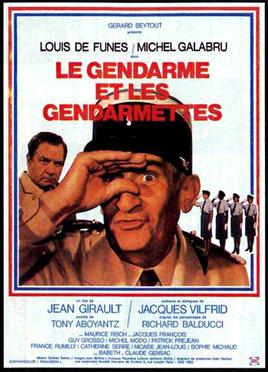
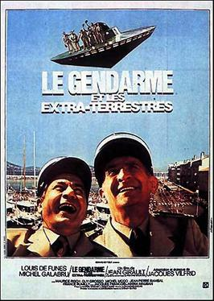

Wikipedia considers Louis de Funes as a "France's favourite actor – having played over 150 roles in film and over 100 on stage. His acting style is remembered for its high-energy performance and his wide range of facial expressions and tics. A considerable part of his best-known acting was directed by Jean Girault. Louis de Funès is one of the most famous French actors of all time, and even more so when it comes to his international celebrity"
The filmografy of this famost actor includes about 150 movies. Most of them were comedies.
The Troops of St. Tropez (1964)
Gendarme Ludovic Cruchot is re-assigned to the French Riviera seaside resort town of Saint-Tropez where petty criminals and his own daughter give him a hard time.
The Troops & Troop-ettes (1982)
Cruchot and his gendarmes from Saint-Tropez receive a highly responsible government mission - to ensure the safety of four young beautiful female gendarmes officers. In a few days they begin to be abducted by mysterious villains.
The Troops & Aliens (1979)
In St. Tropez, French gendarme Cruchot and his men battle petroleum-drinking, human-looking, metallic aliens.